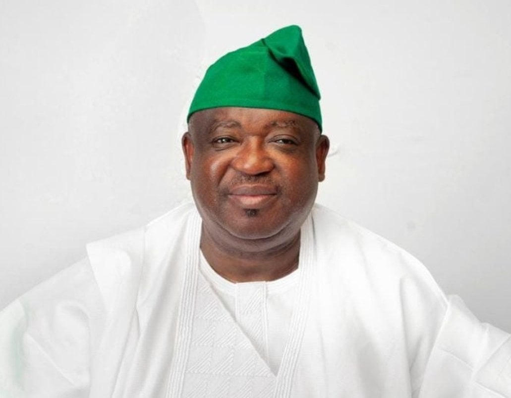

south south
- Akwa-ibom state
- cross river state
- Bayelsa state
- Delta state
- Edo state
- River state
 Donald Duke Former governor of cross river state
Donald Duke Former governor of cross river state
south west
- lagos state
- ogun state
- osun state
- ekiti state
- oyo state
 Babatunde Fashola Former governor of lagos state
Babatunde Fashola Former governor of lagos state
south east
- Ebonyi state
- Anambra state
- imo state
- Abia state
- Enugu
 Peter Obi former governor of Anambra state
Peter Obi former governor of Anambra state
north west
- kaduna state
- kastina state
- kano state
- kebbi state
- sokoto state
- jigawa state
- zamfara state
 umar namadi governor of jigawa state
umar namadi governor of jigawa state
north central
- FCT
- kwara statae
- kogi state
- benue state
- plateau state
- Niger state
- Nasarawa state

caleb mutfwang governor of plateau state
north east
- Adamawa
- Bauchi
- Borno
- Gombe
- Taraba
- yobe
 Agbu ketas governor of taraba state
Agbu ketas governor of taraba state